第 23 章 ggplot2之让你的数据骚动起来
这节课，我们讲如何让我们的图动起来。
23.1 为什么要使用动图
- 改进了图形在时间上和空间上的重新定位
- 传递更多信息
- 引人注意
23.2 gganimate宏包
动图可以将其理解为多张静态图堆在一起，当然不是随意的堆放，而是按照一定的规则，比如按照时间的顺序，或者类别的顺序。一般而言，动图制作包括两个步骤: 静态图制作及图形组装。静态图制作，前面几章我们讲过主要用ggplot2宏包实现；对于图形组装，需要用到今天我们要讲Thomas Lin Pedersen的gganimate宏包，来自同一工厂的产品，用起来自然是无缝衔接啦。
23.2.1 先来一张静态图
covdata::covnat %>%
dplyr::filter(iso3 == "USA") %>%
dplyr::filter(cu_cases > 0) %>%
ggplot(aes(x = date, y = cases)) +
geom_path() +
labs(title = "美国新冠肺炎累积确诊病例",
subtitle = "数据来源https://kjhealy.github.io/covdata/")
让它动起来，我们只需要增加一行代码！
covdata::covnat %>%
dplyr::filter(iso3 == "USA") %>%
dplyr::filter(cu_cases > 0) %>%
ggplot(aes(x = date, y = cases)) +
geom_path() +
labs(title = "美国新冠肺炎累积确诊病例 {frame_along}",
subtitle = "数据来源https://kjhealy.github.io/covdata/") +
transition_reveal(along = date)


23.3 The grammar of animation
使用gganimate做动画，只需要掌握以下五类函数：
transition_*(): 定义动画是根据哪个变量进行”动”，以及如何”动”view_*(): 定义坐标轴随数据变化.shadow_*(): 影子（旧数据的历史记忆）?定义点相继出现的方式.enter_*()/exit_*(): 定义新数据出现和旧数据退去的方式.ease_aes(): 美观定义，控制变化的节奏(如何让整个动画看起来更舒适).
下面通过案例依次讲解这些函数功能。
23.4 希望动画随哪个变量动起来
变量如何选择，这需要从变量类型和变量代表的信息来确定。
23.4.1 transition_states
transition_states(states = ), 这里的参数states往往带有分组信息，可以等价于静态图中的分面。


diamonds %>%
ggplot(aes(carat, price)) +
geom_point() +
transition_states(states = color, transition_length = 3, state_length = 1)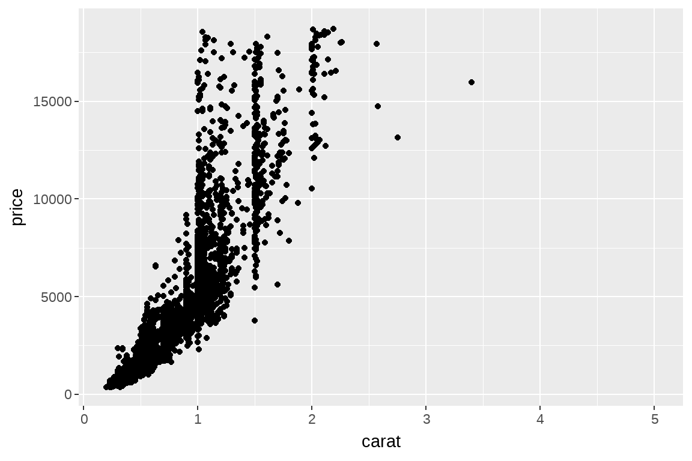
23.4.2 transition_time
transition_time(time = ), 这里的time一般认为是连续的值，相比于transition_states，没有了transtion_length这个选项，是因为transtion_length默认为time. 事实上，transition_time是transition_states的一种特例，但其实也有分组的要求
p <- gapminder::gapminder %>%
ggplot(aes(x = gdpPercap, y = lifeExp, size = pop, colour = country)) +
geom_point(alpha = 0.7, show.legend = FALSE) +
scale_size(range = c(2, 12)) +
scale_x_log10() +
labs(x = "GDP per capita",
y = "life expectancy"
)
p
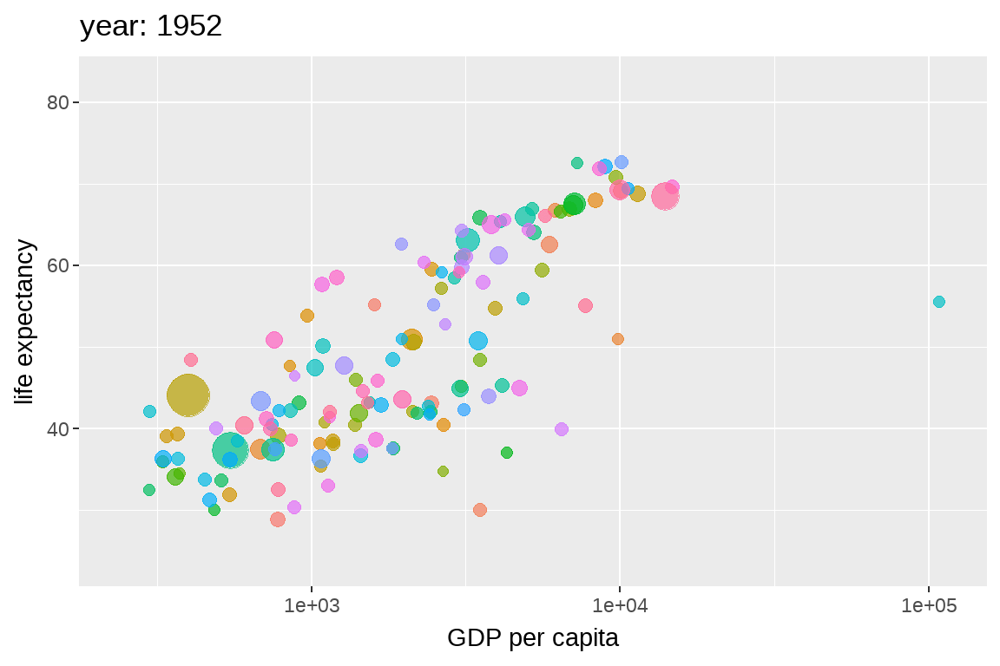
23.4.3 transition_reveal
transition_reveal(along = ), along 这个词可以看出，它是按照某个变量依次显示的意思，比如顺着x轴显示

ggplot(economics) +
aes(x= date, y = unemploy) +
geom_line() +
transition_reveal(along = date) +
labs(title = "now is {frame_along}")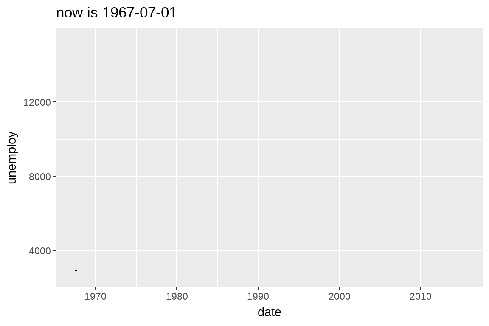
23.4.4 transition_filter
transition_filter( 至少2个筛选条件，transition_length = , filter_length =), 动图将会在这些筛选条件对应的子图之间转换
diamonds %>%
ggplot(aes(carat, price)) +
geom_point() +
transition_filter(
transition_length = 3,
filter_length = 1,
cut == "Ideal",
Deep = depth >= 60
)
23.4.5 transition_layers
transition_layers(): 依次显示每个图层
mtcars %>%
ggplot(aes(mpg, disp)) +
geom_point() +
geom_smooth(colour = 'grey', se = FALSE) +
geom_smooth(aes(colour = factor(gear))) +
transition_layers(layer_length = 1, transition_length = 2,
from_blank = FALSE, keep_layers = c(Inf, 0, 0)) +
enter_fade() +
exit_fade()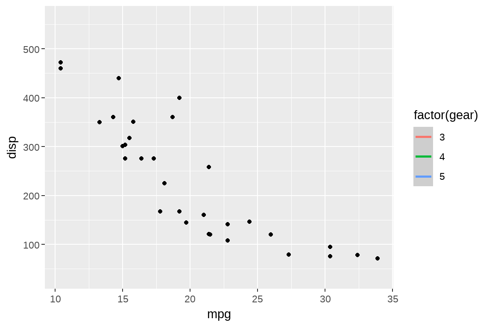
23.4.6 其他
transition_manual()transition_components()transition_events()
23.5 希望坐标轴随数据动起来
动画过程中，绘图窗口怎么变化呢？
23.5.1 view_follow
ggplot(iris, aes(Sepal.Length, Sepal.Width)) +
geom_point() +
labs(title = "{closest_state}") +
transition_states(Species, transition_length = 4, state_length = 1) +
view_follow()
23.5.2 其它
view_step()view_step_manual()view_zoom()view_zoom_manual()
23.6 希望动画有个记忆
shadow_wake(wake_length =, )旧数据消退时，制造点小小的尾迹的效果（wake除了叫醒，还有尾迹的意思，合起来就是记忆_尾迹）shadow_trail(distance = 0.05)旧数据消退时，制造面包屑一样的残留痕迹（记忆_零星残留）shadow_mark(past = TRUE, future = FALSE)将旧数据和新数据当作背景（记忆_标记）
23.6.1 shadow_wake()
p +
transition_time(time = year) +
labs(title = "year: {frame_time}") +
shadow_wake(wake_length = 0.1, alpha = FALSE)
ggplot(iris, aes(Petal.Length, Sepal.Length)) +
geom_point(size = 2) +
labs(title = "{closest_state}") +
transition_states(Species, transition_length = 4, state_length = 1) +
shadow_wake(wake_length = 0.1)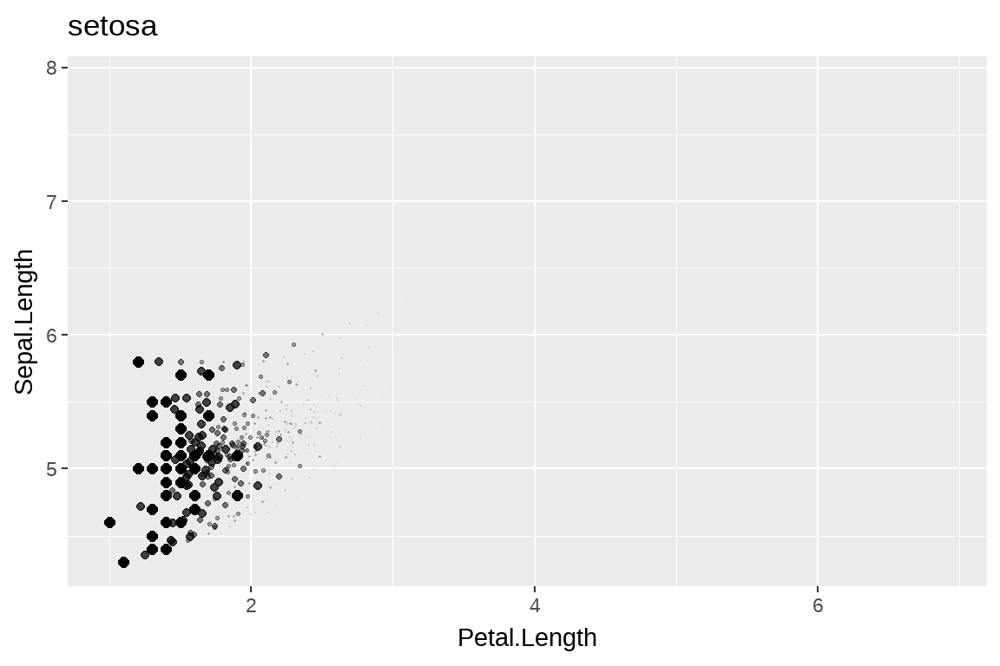
23.6.2 shadow_trail()
p +
transition_time(time = year) +
labs(title = "year: {frame_time}") +
shadow_trail(distance = 0.1)
ggplot(iris, aes(Petal.Length, Sepal.Length)) +
geom_point(size = 2) +
labs(title = "{closest_state}") +
transition_states(Species, transition_length = 4, state_length = 1) +
shadow_trail(distance = 0.1)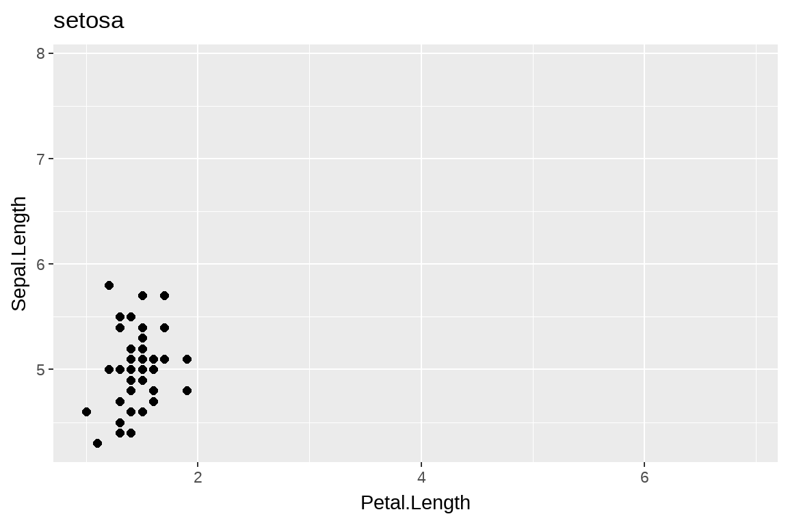
23.7 定义新数据出现和旧数据退去的方式
出现和退去的函数是成对的
23.7.1 enter/exit_fade()
透明度上的变化，我这里用柱状图展示，效果要明显一点。
tibble(x = month.name,
y = sample.int(12)
) %>%
ggplot(aes(x = x, y = y)) +
geom_col() +
theme(axis.text.x = element_text(angle =45, hjust = 1, vjust = 1)) +
transition_states(states = month.name)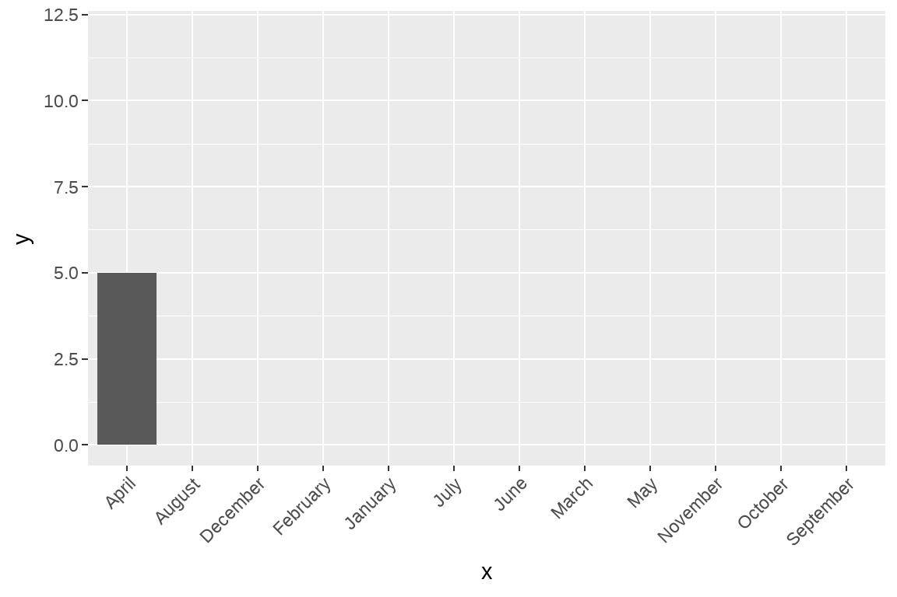
tibble(x = month.name,
y = sample.int(12)
) %>%
ggplot(aes(x = x, y = y)) +
geom_col() +
theme(axis.text.x = element_text(angle =45, hjust = 1, vjust = 1)) +
transition_states(states = month.name) +
shadow_mark(past = TRUE) +
enter_fade()


23.8 控制变化的节奏
控制数据点变化的快慢
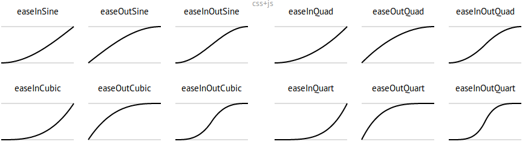
Source: https://easings.net/
看下面的案例：
diamonds %>%
ggplot(aes(carat, price)) +
geom_point() +
transition_states(color, transition_length = 3, state_length = 1) +
ease_aes("cubic-in") # Change easing of all aestheticsdiamonds %>%
ggplot(aes(carat, price)) +
geom_point() +
transition_states(color, transition_length = 3, state_length = 1) +
ease_aes(x = "elastic-in") # Only change `x` (others remain “linear”)
23.9 标签
我们可能需要在标题中加入每张动画的信息，常用罗列如下
transition_states(states = ) +
labs(title = "previous is {previous_state},
current is {closest_state},
next is {next_state}")
transition_layers() +
labs(title = "previous is {previous_layers},
current is {closest_layers},
next is {next_layers}")
transition_time(time = ) +
labs(title = "now is {frame_time}")
transition_reveal(along = ) +
labs(title = "now is {frame_along}")23.10 保存
23.10.1 Renderer options
23.11 案例演示一
这是网上有段时间比较火的racing_bar图
ranked_by_date <- covdata::covnat %>%
group_by(date) %>%
arrange(date, desc(cu_cases)) %>%
mutate(rank = 1:n()) %>%
filter(rank <= 10) %>%
ungroup()ranked_by_date %>%
filter(date >= "2020-05-01") %>%
ggplot(
aes(x = rank, y = cname, group = cname, fill = cname)
) +
geom_tile(
aes(
y = cu_cases / 2,
height = cu_cases,
width = 0.9
),
alpha = 0.8,
show.legend = F
) +
geom_text(aes(
y = cu_cases,
label = cname
),
show.legend = FALSE
) +
scale_x_reverse(
breaks = c(1:10),
label = c(1:10)
) +
theme_minimal() +
coord_flip(clip = "off", expand = FALSE) +
labs(
title = "日期: {closest_state}",
x = "",
caption = "Source: github/kjhealy/covdata"
) +
transition_states(date,
transition_length = 4,
state_length = 1,
wrap = TRUE
) +
ease_aes("cubic-in-out") 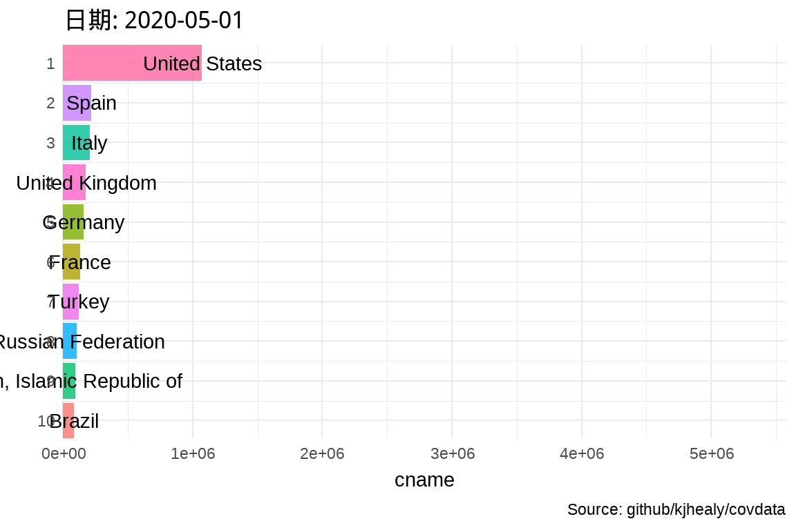
23.12 案例演示二
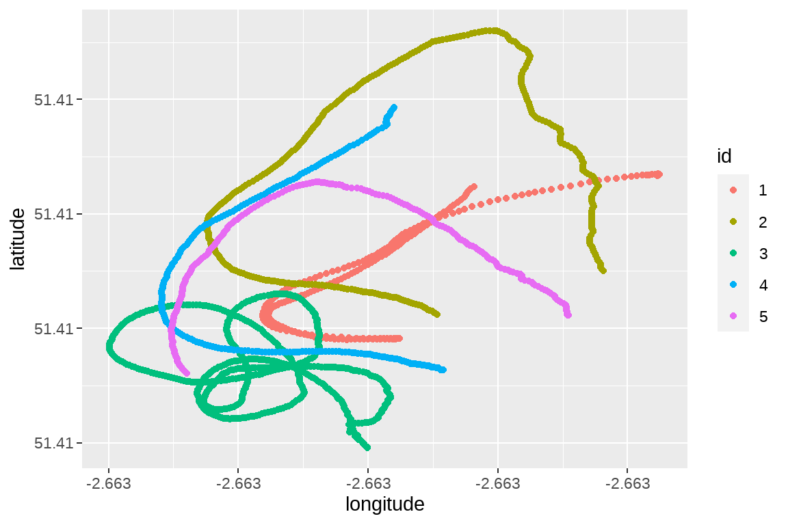
23.12.1 常规的方法
bats %>%
ggplot(aes(x = longitude,
y = latitude,
group = id,
color = id)
) +
geom_point() +
transition_time(time) +
shadow_mark(past = TRUE)
- geom_path()是按照数据点出现的先后顺序
- geom_line()是按照数据点在x轴的顺序
bats %>%
ggplot(aes(x = longitude,
y = latitude,
group = id,
color = id)
) +
geom_path() +
transition_time(time) +
shadow_mark(past = TRUE)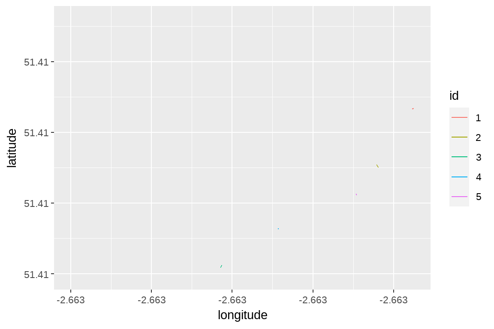

23.13 案例演示三
全球R-Ladies组织，会议活动的情况，我们在地图上用动图展示
#library(maps)
#library(ggthemes)
world <- ggplot() +
borders("world", colour = "gray85", fill = "gray80") +
ggthemes::theme_map()
world
world +
geom_point(
data = rladies,
aes(x = lon, y = lat, size = followers),
colour = 'purple', alpha = .5) +
scale_size_continuous(range = c(1, 8),
breaks = c(250, 500, 750, 1000)) +
labs(size = 'Followers')
用动图展示（这种方法可以用在流行病传播的展示上）
world +
geom_point(aes(x = lon, y = lat, size = followers),
data = rladies,
colour = 'purple', alpha = .5
) +
scale_size_continuous(range = c(1, 8),
breaks = c(250, 500, 750, 1000)) +
transition_states(created_at) +
shadow_mark(past = TRUE) +
labs(title = 'Day: {closest_state}')
23.14 课后作业
23.14.1 作业1
把下图弄成你喜欢的样子
library(gapminder)
theme_set(theme_bw())
ggplot(gapminder) +
aes(x = gdpPercap, y=lifeExp,
size = pop, colour = country) +
geom_point(show.legend = FALSE) +
scale_x_log10() +
scale_color_viridis_d() +
scale_size(range = c(2, 12)) +
labs(x = "GDP per capita", y = "Life expectancy") +
transition_time(year) +
labs(title = "Year: {frame_time}")23.14.2 作业2
那请说说这以下三个的区别？
bats %>%
dplyr::filter(id == 1) %>%
ggplot(
aes(x = longitude,
y = latitude)) +
geom_point() +
transition_reveal(time) #<<
bats %>%
dplyr::filter(id == 1) %>%
ggplot(
aes(x = longitude,
y = latitude)) +
geom_point() +
transition_states(time) #<<
bats %>%
dplyr::filter(id == 1) %>%
ggplot(
aes(x = longitude,
y = latitude)) +
geom_point() +
transition_time(time) #<<